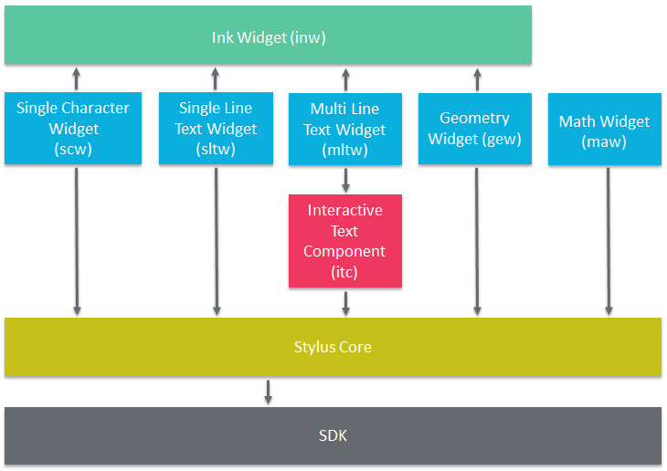

Some widgets and components are dependent on each other. If you are interested in a specific widget, know that you might have to integrate other widgets first.
To add those references in Eclipse, right-click on your project > Properties > Android, then click Add.
For more information, read the documentation of the corresponding widget.

To use the Multi Line Text Widget, you will need to add the following project references:
The same applies with the MLTW sample, as it does not contain the other required libraries.